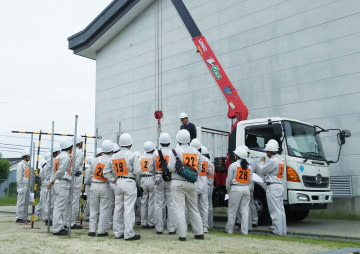

建築科
建築科では、木造建築物の加工技術には欠かせない器工具や木工機械の取り扱いをはじめ、模擬住宅の実習を通して軸組工法や内装・外装仕上げの施工技術を学びます。また、リフォーム工事等にも対応できる技能と知識の習得を目指します。あわせて2級建築士資格取得に必要な知識を学び、幅広く建築全般にわたる人材育成と就職をサポートします。
カリキュラム
-
軸組加工技術関係
規矩術、施工法、仕様積算、建築材料 - 設計、施工、工事管理（監理）関係
建築計画、建築構造、建築法規、構造力学、建築製図、CAD製図、測量など - 実技
器工具使用法、工作実習、模擬住宅建築実習、内装・外装実習など
主な就職先
建設業関連
- 建設会社
- 工務店
- ハウスメーカー
- 建築設計事務所

- 内装・外装、リフォーム関連
- 設計・工事監理関連
- 木材関係会社（製材、加工会社）
- 建築関連販売業務
- 住宅営業
- 指定確認検査機関など

目指せる資格
- 建築大工技能検定
3級は在校中、2級は修了後、受検可能） - 級建築士、木造建築士
（訓練修了後、実務経験(試験時)：高卒者0年、中卒者2年
実務経験(登録時)：高卒者2年、中卒者4年) - 2級建築施工管理技術検定
（訓練修了後、実務経験1年短縮） - 技能講習
（フォークリフト運転、玉掛け、小型移動式クレーン運転） - 特別教育
（小型車両系建設機械運転） - 安全衛生教育
（刈払機作業） - DIYアドバイザー
（実技試験審査により免除あり）

年間スケジュール
| 4月 | 入校式
懇談（キャリアコンサルティング） |
|---|---|
| 5月 | |
| 6月 | |
| 7月 | 懇談（キャリアコンサルティング） |
| 8月 | 夏休み（〜中旬まで） |
| 9月 |
| 10月 | |
|---|---|
| 11月 | |
| 12月 | 懇談（キャリアコンサルティング） |
| 1月 | 専門校展 |
| 2月 | |
| 3月 | 懇談（キャリアコンサルティング）
終了式 |